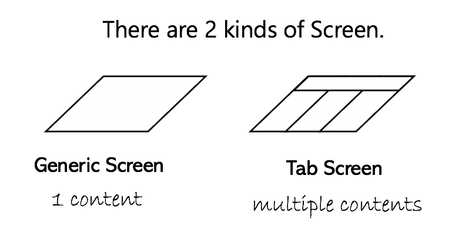

React Native Zen Router
最小限の概念、最小限のインターフェースを提供し、軽量でシンプルに扱えることを目指したルータです。 一切の表示領域は提供せず、ルーティングのために最低限必要な枠組みのみを提供します。
Concepts
登場する主な概念は積み上げ表示されるScreenと、Screenの内容であるContentの２つです。
Screenはルータが提供する、アプリケーション表示の土台となるReactコンポーネントです。

Contentは、あなたが定義したReactコンポーネントです。

Screenには１つのContentを持つGenericScreenと、複数のContentとTabコンポーネントを持つTabScreenがあります。 
Routerはスタック構造のScreen群を持つことになります。スクリーン名を指定してpushすることで新しいScreenが積み上げられます。新しいScreenの表示や非表示は縦方向/横方向のアニメーションを都度指定することが出来ます。
Installation
Getting Started
// ルートオブジェクトを準備します。
// 下記の"ScreenA","ScreenB"は新しいScreenを生成する時に指定する名前となります。
// ScreenAやScreenBのインスタンスが実際に画面に表示されるScreenです。
const routes: Routes = {
ScreenA: {
screen: createGenericScreen({content: ContentX})
},
ScreenB: {
screen: createTabScreen({
tabType: 'footer',
tabComponent: MainTab,
contentComponents: [
ContentY,
ContentZ
],
swipable: true
})
}
};
// ルーティング設定
const config = {
initialRouteName: 'ScreenA'
};
// ScreenPropsは各Contentで受け取ることができるオブジェクトです
const screenProps = {user, items, cart};
export default class App extends React.Component {
render() {
return (
<Router
routes={routes}
config={config}
screenProps={screenProps}/>);
}
}API Reference
https://jshosomichi.github.io/react-native-zen-router/
Contribute
Credits
License
MIT
MIT @ jshosomichi